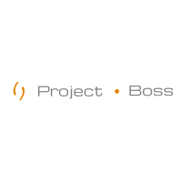

<mat-drawer-container class="example-container" autosize>    
    <mat-drawer #drawer mode="over" opened class="example-sidenav">   
        <button mat-button class="tgl-button" (click)="drawer.toggle()">
            <fa-icon [icon]="['fas', 'arrow-left']" size="lg" class="pull-right"></fa-icon>
        </button>       
        <div class="text-center">
            
        </div>
        <div class="text-center">
            <div class="mb-2" fxLayout="row" fxLayoutAlign="center center">
                <ngx-avatar name="{{userName}}" size="100"></ngx-avatar>
            </div>
            <p><strong>{{userName}}</strong></p>
            <div fxLayout="row" fxLayoutAlign="space-evenly center">
                <div>
                    <a mat-button class="full-width-link" (click)="logout()"><fa-icon [icon]="['fas', 'sign-out-alt']"></fa-icon> Logout</a>
                </div>
                <div>
                    <a mat-button class="full-width-link" (click)="openProfileDialog()"><fa-icon [icon]="['fas', 'user-circle']"></fa-icon> Profile</a>
                </div>
            </div>            
        </div>
        <mat-divider class="m-3"></mat-divider>
        <div fxLayout="column" fxLayoutAlign="space-around center">
            <a class="full-width-link" color="primary" mat-button routerLinkActive="mat-raised-button" routerLink="overview"><fa-icon class="float-left" [icon]="['fas', 'home']"></fa-icon> Visão Geral</a>                  
            <a class="full-width-link" color="primary" mat-button routerLinkActive="mat-raised-button" routerLink="tasks"><fa-icon class="float-left" [icon]="['fas', 'tasks']"></fa-icon> Tarefas</a>                  
            <a class="full-width-link" color="primary" mat-button routerLinkActive="mat-raised-button" routerLink="project"><fa-icon class="float-left" [icon]="['fas', 'project-diagram']"></fa-icon> Projetos</a>
        </div>
        <div *ngIf="isAdmin" fxLayout="column" fxLayoutAlign="space-around center">
            <mat-divider class="m-3"></mat-divider>
            <mat-accordion style="width: 100%;">
                <mat-expansion-panel>
                    <mat-expansion-panel-header>
                        <strong>Menu Admin</strong>
                    </mat-expansion-panel-header>
                    <div>
                        <a class="full-width-link" mat-button routerLinkActive="mat-raised-button" routerLink="users"><fa-icon [icon]="['fas', 'users']"></fa-icon> Cadastros de Usuários</a>                        
                    </div>                    
                </mat-expansion-panel>                
            </mat-accordion>           
        </div>
        <mat-divider class="m-3"></mat-divider>
        <app-footer></app-footer>
    </mat-drawer>
    <mat-drawer-content>
        <mat-toolbar class="mb-3 custom-toolbar">
            <button mat-icon-button aria-label="Expandir/contrair menu" (click)="drawer.toggle()">
                <mat-icon>more_horiz</mat-icon>
            </button>
        </mat-toolbar>        
        <router-outlet></router-outlet>        
    </mat-drawer-content>    
</mat-drawer-container>
<style>
.tgl-button{
    width: 100%;
}
</style>